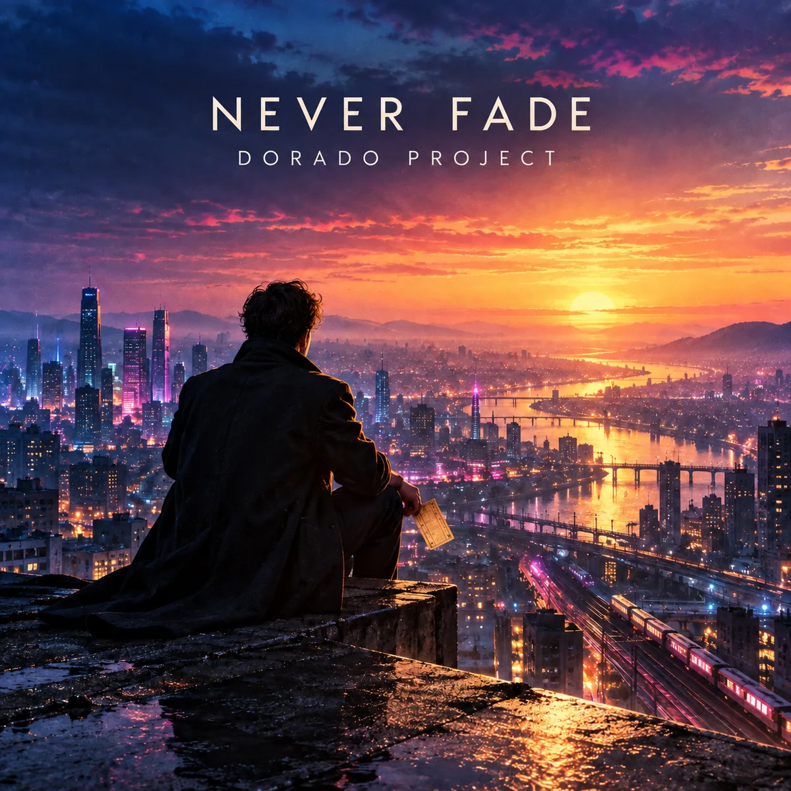

IN PRODUCTION · SYNTHPOP
Never Fade
Synthpop / New wave
A majestic synthpop anthem with a simple, repeating “We never fade” hook, soaring vocals and a huge final chorus. Audio and Spotify link to follow.
Spotify link to follow when the track is available.